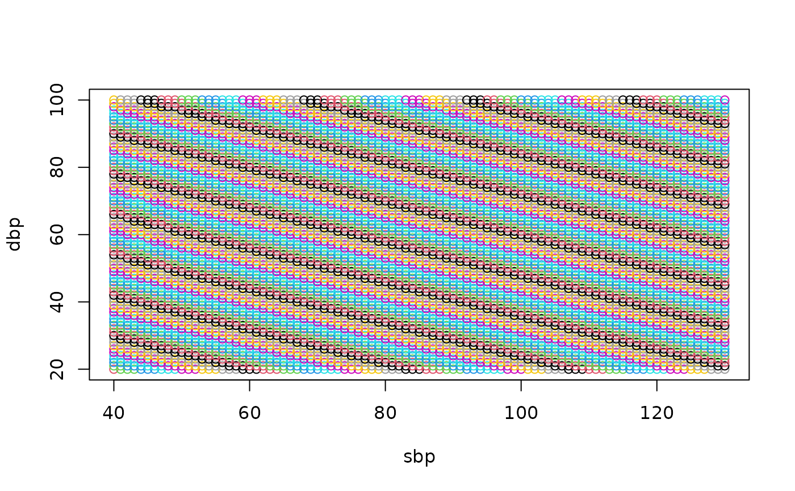

Estimate mean arterial pressure from systolic and diastolic blood pressures.
Examples
DF <- expand.grid(sbp = 40:130, dbp = 20:100)
DF$map <- with(DF, map(sbp, dbp))
with(DF, plot(sbp, dbp, col = map))

DF$map[DF$sbp < DF$dbp] <- NA
z <- matrix(DF$map, nrow = length(unique(DF$sbp)), ncol = length(unique(DF$dbp)))
image(
x = unique(DF$sbp),
y = unique(DF$dbp),
z = z,
col = hcl.colors(100, palette = "RdBu"),
xlab = "SBP (mmHg)",
ylab = "DBP (mmHg)",
main = "Estimated Mean Arterial Pressue"
)
contour(x = unique(DF$sbp), y = unique(DF$dbp), z = z, add = TRUE)